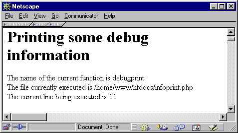

|
Вы можете также печатать информацию о ходе выполнения, такую как текущий
выполняемый файл. Имя выполняемой в данный момент функции можно получить с
помощью функции get_active_function_name(). Эта функция возвращает указатель на имя функции и не принимает аргументов.
Чтобы запросить имя исполняемого в данный момент файла, используйте zend_get_executed_filename().
Эта функция выполняет доступ к глобалам исполнителя/executor, которые передаются ей макросом
ELS_C. Глобалы исполнителя автоматически доступны каждой функции, вызываемой
непосредственно Zend (они являются частью INTERNAL_FUNCTION_PARAMETERS, описанного ранее в этой главе). Если вам нужен доступ к глобалам исполнителя
в другой функции, которая не имеет их как автоматически доступные, вызовите макрос
ELS_FETCH() один раз в этой функции; это переведёт их в вашу локальную область видимости.
Наконец, номер исполняемой в данный момент строки можно получить с помощью функции
zend_get_executed_lineno(). Эта функция также требует глобалов исполнителя в качестве аргументов. Примеры
этих функций см. в Листинге 9.15 и на Рисунке 9.10. Разумеется, все примеры доступны с CD-ROM.
Рисунок 37-4. Листинг 9.15. Печать информации выполнения.
zend_printf("The name of the current function is %s<br>", get_active_function_name());
zend_printf("The file currently executed is %s<br>", zend_get_executed_filename(ELS_C));
zend_printf("The current line being executed is %i<br>", zend_get_executed_lineno(ELS_C)); |
 | |